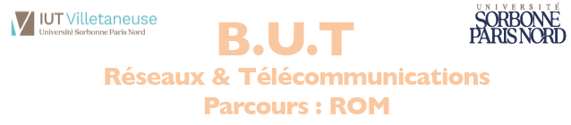

Présentation
Bonjour et bienvenue sur mon site web !
Depuis toujours, les technologies de l’information et la protection des systèmes numériques me fascinent. Cette passion pour la cybersécurité et les réseaux m’a naturellement guidé vers des études orientées vers ces domaines, où je peux développer mes compétences et nourrir mon ambition de contribuer à la sécurité informatique de demain.
Formation

BUT Réseaux & Télécommunications
IUT Villetaneuse — 2024 / 2026

Baccalauréat Général
Spécialité Mathématiques & NSI
Expériences professionnelles
Stage Technicien Informatique – Lycée Théodore Monod (Noisy-le-Sec)
Durant ce stage, j’ai participé à l’installation et la configuration de postes sous Windows 10/11, au déploiement de systèmes via clés bootables, ainsi qu’à la maintenance préventive et curative d’un parc d’environ 500 postes. J’ai également configuré des imprimantes réseau, attribué des adresses IP, vérifié la connectivité des équipements et contribué à la mise en place de commutateurs réseau dans plusieurs salles. Enfin, j’ai réalisé la réinstallation complète de PC Unowhy (flash BIOS, pilotes et outils spécifiques).
Consulter le rapport de stageCentres d'intérêts
- Boxe thaïlandaise – Niveau national
- Jiu-Jitsu brésilien – Niveau amateur
- Padel – Niveau amateur
- Tunisie, Maroc, Indonésie, Oman, Émirats arabes unis
- Malaisie, Albanie, Turquie, Suisse, Italie, Kosovo
- Monténégro, Slovénie, Bosnie-Herzégovine
- Passion pour le monde automobile
- Mécanique et ingénierie
- Nouvelles technologies embarquées